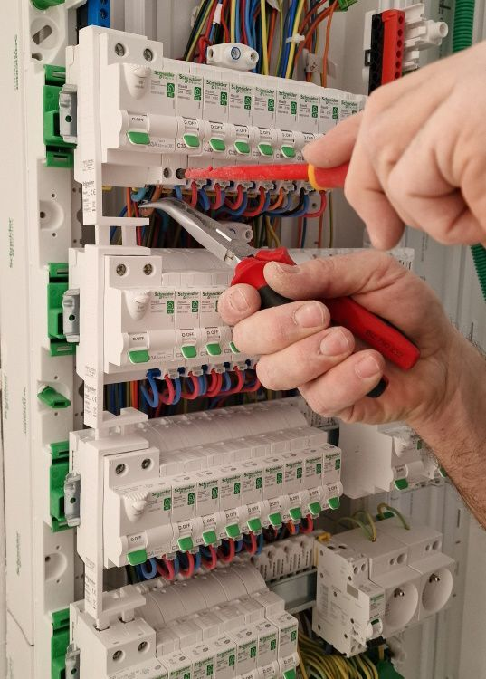

Gedimai
greitas problemos įvertinimas ir šalinimas objekte
Elektroasas teikia elektriko paslaugas Kaune, kai reikia aiškiai ir tvarkingai sutvarkyti instaliaciją, pašalinti gedimą, sumontuoti skydelį ar pajungti naujus taškus namuose bei verslo patalpose.

Gedimai
greitas problemos įvertinimas ir šalinimas objekte
Instaliacija
nauji taškai, kabeliai ir suplanuotos apkrovos
Skydeliai
tvarkingas grandinių išdėstymas ir apsaugos
Kaunas
paslaugos mieste ir pagal susitarimą rajone
Elektroasas teikia elektriko paslaugas Kaune, kai reikia tvarkingai sutvarkyti elektros ūkį bute, name ar verslo patalpose. Atliekami tiek smulkesni darbai, kaip rozečių ar jungiklių keitimas, tiek platesni elektros instaliacijos sprendimai, kai planuojamas remontas, naujos zonos ar papildomi taškai. Kiekviena situacija pirmiausia įvertinama praktiškai, kad būtų aišku, ar pakanka lokalaus remonto, ar verta iš karto atnaujinti didesnę dalį instaliacijos.
Dažniausios užklausos apima naujų rozečių taškų įrengimą, senesnės instaliacijos atnaujinimą, skydelio pertvarkymą po remonto ir apšvietimo sprendimus virtuvėje, vonioje, laiptinėje ar lauke. Svarbiausia, kad darbai būtų parinkti pagal realų poreikį, todėl prieš pradedant aptariamas objekto tipas, naudojama įranga ir numatomos apkrovos. Taip lengviau pasirinkti saugų, ekonomišką ir kasdieniam naudojimui patogų sprendimą be nereikalingų perdarymų ateityje.
Kai reikia atnaujinti senesnį butą, suplanuoti naujus taškus virtuvei ar saugiai prijungti papildomą įrangą, svarbu darbus derinti prie realios apkrovos, o ne vien prie anksčiau buvusio išdėstymo. Todėl prieš pradedant aptariama, kaip objektas naudojamas dabar, kokia technika bus jungiama ir ko gali reikėti artimiausiu metu. Toks pasiruošimas padeda išvengti skubotų sprendimų ir vėlesnių papildomų perdarymų.
Klientai Kaune dažnai kreipiasi ir dėl elektros gedimų šalinimo, kai kaista rozetė, kibirkščiuoja jungiklis, dingsta elektra ar nuolat išmuša saugiklius. Pagal susitarimą elektriko paslaugos teikiamos ir Kauno rajone, kai reikia atvykti į individualų namą, sodo namelį ar kitą objektą už miesto. Jei norite platesnės paslaugų apžvalgos, peržiūrėkite Elektros darbai Kaune, o jei jau žinote, kokio darbo reikia, susisiekite ir suderinkime patogiausią laiką konkrečiam vizitui, objekto apžiūrai ar planuojamam remonto etapui jūsų namuose ar kitame objekte.

Puslapis išlaikytas trumpas ir aiškus, todėl čia pateikiamos svarbiausios paslaugos, dėl kurių dažniausiai kreipiamasi.
Atliekamas naujos instaliacijos įrengimas ir esamų linijų atnaujinimas pagal objekto planą bei apkrovas.
Ieškomos priežastys, kodėl dingsta elektra, išmuša saugiklius ar netvarkingai veikia atskiros grandinės.
Montuojami nauji skydeliai, keičiami automatai ir tvarkomas grandinių išdėstymas, kad sistema būtų patogi naudoti.
Įrengiami nauji taškai, pakeičiami susidėvėję mechanizmai ir pritaikomos vietos kasdieniam naudojimui.
Pajungiami vidaus ir lauko šviestuvai, apšvietimo grupės bei jungimo taškai skirtingoms zonoms.
Tiesiami kabeliai naujoms grandinėms, buitinės technikos taškams ir suplanuotiems instaliacijos maršrutams.
Padedama tiek atliekant lokalius remonto darbus, tiek atnaujinant instaliaciją renovuojamuose butuose.
Sprendimai pritaikomi individualiems namams, dirbtuvėms, biurams ir mažoms komercinėms erdvėms.
Atliekami elektros instaliacijos, gedimų šalinimo, elektros skydelių, rozečių, jungiklių, apšvietimo ir kiti elektros darbai.
Elektros darbai atliekami Kaune ir pagal susitarimą Kauno rajone.
Kaina priklauso nuo darbo pobūdžio, objekto vietos, gedimo sudėtingumo ir darbų apimties.
Elektriką verta kviesti, jei dingsta elektra, kaista rozetės, kibirkščiuoja jungikliai, išmuša saugiklius arba planuojama nauja elektros instaliacija.
Taip, gali būti atliekami tiek smulkūs elektros darbai, tiek didesni elektros instaliacijos ar remonto darbai.
Susisiekite dėl gedimo, naujos instaliacijos ar skydelio darbų, o jei norite išsamesnės paslaugų apžvalgos, atsidarykite puslapį Elektros darbai Kaune.